两份最终 HTML 手稿
① 活动首页、② 活动详情、③ 我的行程；④–⑬ 表单、凭证、个人资料与管理审核页面，附五类状态板。保留原稿布局与长屏高度同步逻辑。
暖米白画布、墨黑信息块、深红主行动与暖黄标签。现有 13 页保持大字号与呼吸感，内容按长屏自然展开；双端实施时落实浅色可读性和 44px 实际触控范围。
本目录收录最终设计手稿、配套图片、13 页高清长图、五类状态示意与完整令牌规格。解压成果包后打开本页即可离线浏览。所有页面均为静态设计样本，示例姓名、电话、照片、编号和状态用于演示；新主题的业务实施、双端部署与真机验收仍待完成。
先看完整手稿与视觉说明，再按规格交接颜色、组件和页面落点。
① 活动首页、② 活动详情、③ 我的行程；④–⑬ 表单、凭证、个人资料与管理审核页面，附五类状态板。保留原稿布局与长屏高度同步逻辑。
32 个待迁移变量、15 组对比度检查，以及字体、尺寸、长屏、安全区、13 页路由、权限和验收边界。JSON 从已确认规格直接提取。
点击图片查看完整分辨率。逐页图保留自然长屏，不以缩小字号或裁切内容适配一屏。页面状态与内容摘要见 成果清单。
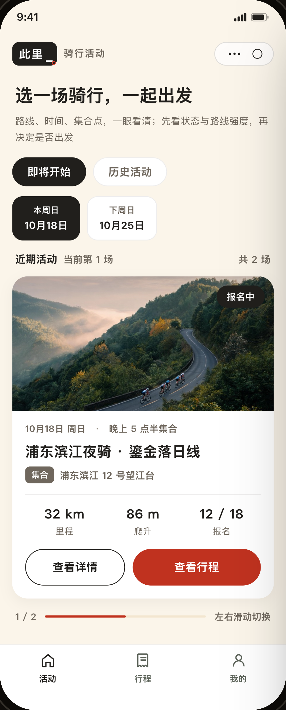
大图活动卡 · 三格指标
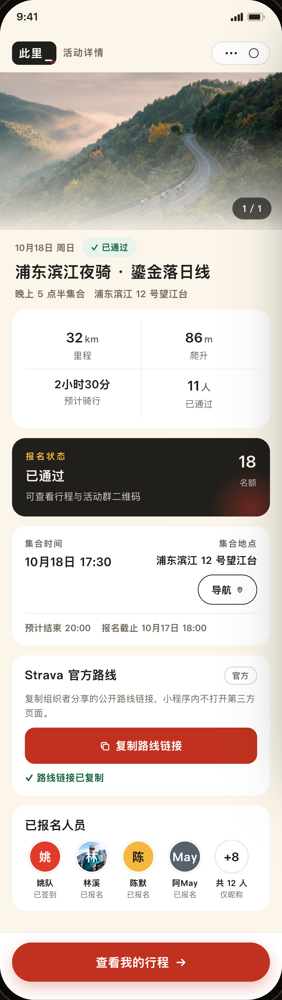
封面 · 黑色决策信息块
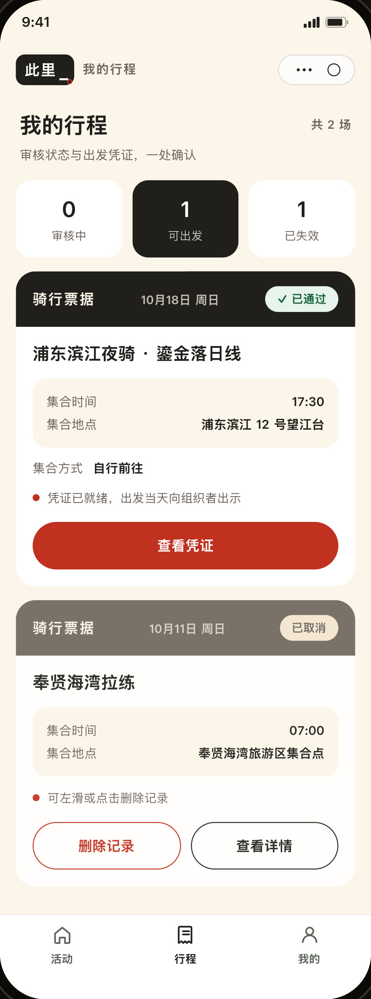
统计卡 · 票据行程卡
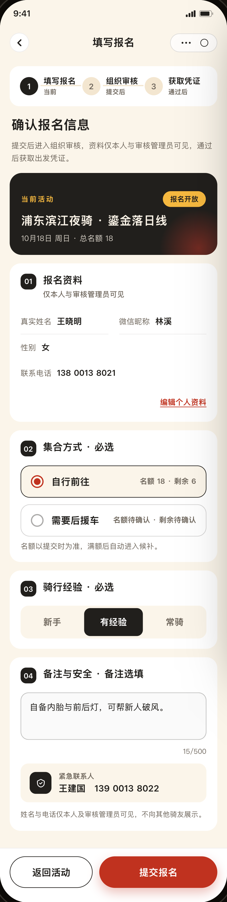
三阶段步骤 · 资料快照
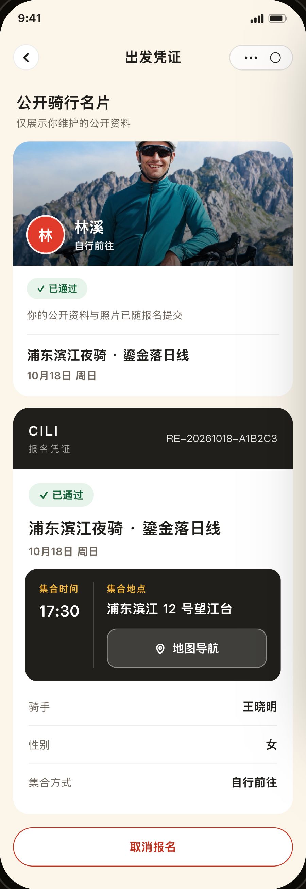
公开名片 · 完整凭证编号
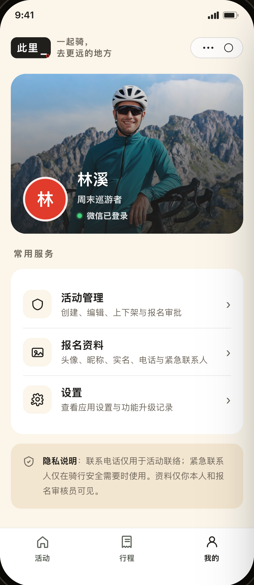
大图身份区 · 常用服务
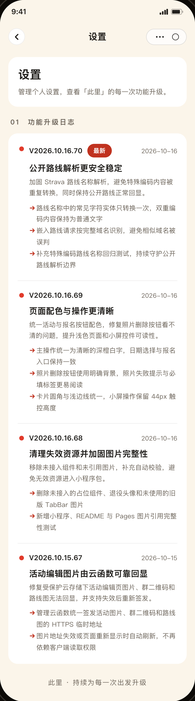
版本摘要 · 功能说明
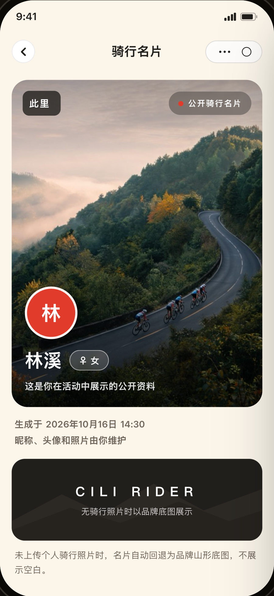
昵称海报 · 无图回退
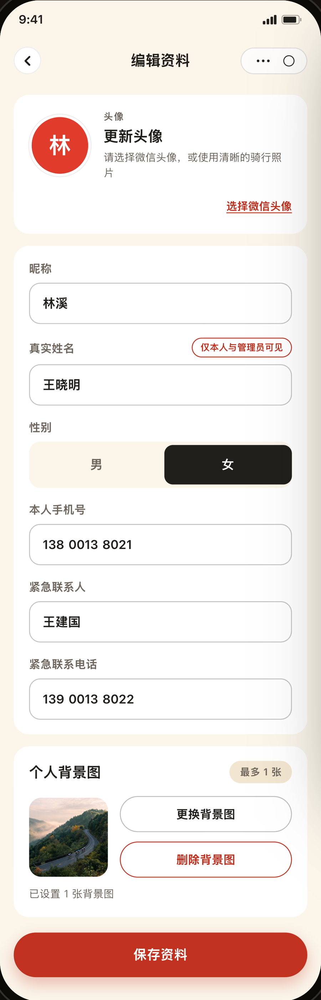
资料字段 · 单张背景图
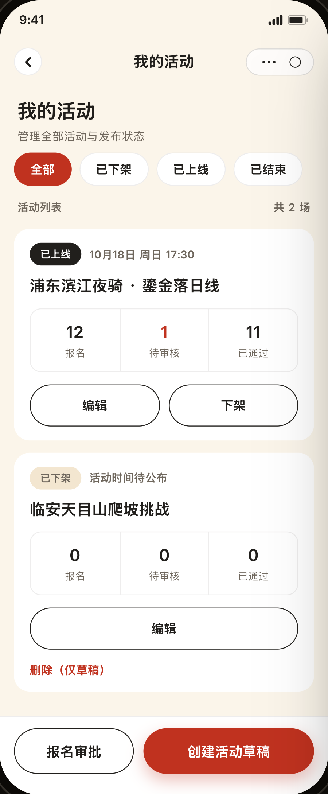
状态筛选 · 分层操作
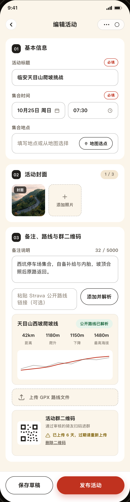
日期时间 · 路线与二维码
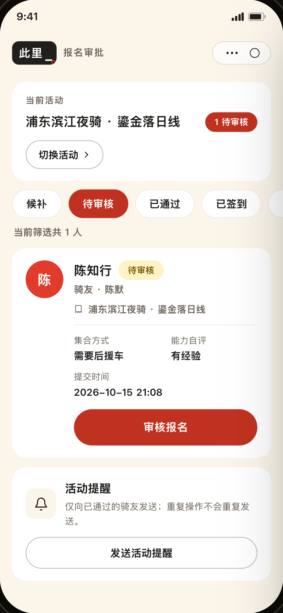
六项筛选 · 管理员资料
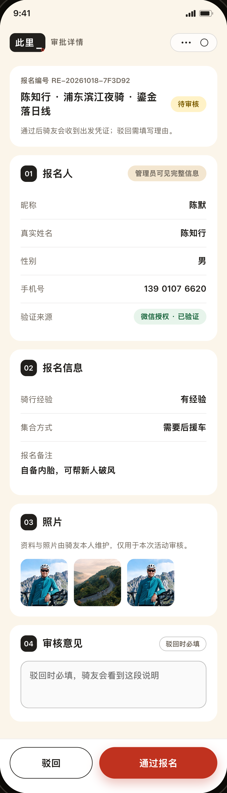
四分区资料 · 主次审核动作
空行程、加载与失败、满员候补、聚焦与报错、大字号与高对比。状态板为缩略示意，各页面的真实状态仍需在实施后独立验收。
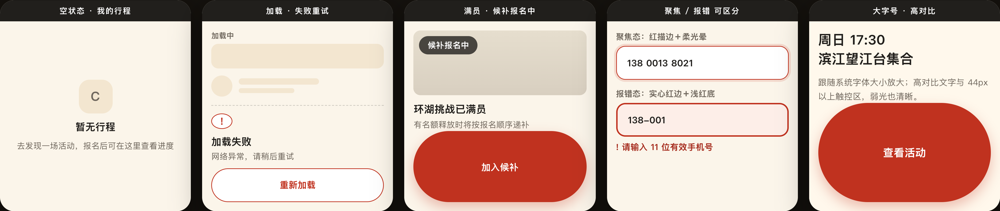
sources/ 保存两份原始 HTML 与已确认规格的原样文本快照，附 .txt 后缀以便查看源文；下载时提供原文件名。根目录的两份 HTML 仅补归档标记并将图片引用改为 assets/ 相对路径。原始稿摘要与规格一致，离线稿和截图另有 SHA-256，完整对应关系收录在清单中。